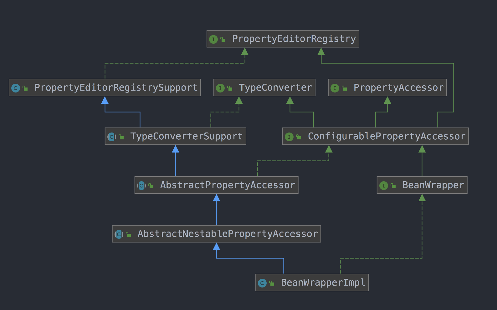

1.前言
为什么先从对bean的包装开始阅读源码呢，因为beans包的核心就是BeanFactory 🐶，其作用就是对bean进行管理，那么对bean管理的前提就是对bean进行解析，然后支持属性的set 或 get 操作。那么我们列举一下BeanFactory的主要职责，即使没阅读过源码，也应该知道个大概过程.
- 解析
xml或者其它配置文件得到BeanDefinition - 实例化
Instance AutoWired自动装配Bean的依赖
所以，我们先了解如何去得到一个Bean的 “定义” (解析xml那部分先不讲)
2. BeanWrapper接口
1 | 这个类的主要作用是解析`Class` 然后获取属性，进一步封装，然后提供修改属性的接口 |
1 | public interface BeanWrapper extends ConfigurablePropertyAccessor { |
为什么上面会涉及到集合，因为Bean 支持nested (嵌套) 属性读写，也就是pojo
1 | 1) |
3. BeanWrapperImpl实现
我们从其测试代码中可以看到这样的用法
1
2
3
4
5GetterBean target = new GetterBean();
BeanWrapper accessor = createAccessor(target);
accessor.setPropertyValue("name", "tom");
assertThat(target.getAliasedName()).isEqualTo("tom");
assertThat(accessor.getPropertyValue("aliasedName")).isEqualTo("tom");1
2
3protected BeanWrapperImpl createAccessor(Object target) {
return new BeanWrapperImpl(target);
}我们可以看到
createAccessor就是new BeanWrapperImpl就完成对Bean的封装了， 就可以调用setPropertyValue设置属性值getPropertyValue获取属性值
初步看下
BeanWrapperImpl的UML(不用纠结UML后面会人肉其运行过程) :happy:
在上面这个图中，着重
AbstractNesablePropertyAccessor此类是用于支持上文提到的Nested嵌套属性读写.getPropertyDescriptor获取属性描述符1
2
3
4
5
6
7
8
9
10
11
12public PropertyDescriptor getPropertyDescriptor(String propertyName) throws InvalidPropertyException {
// [1] 先解析嵌套属性，获取最后一个属性的Instance
BeanWrapperImpl nestedBw = (BeanWrapperImpl) getPropertyAccessorForPropertyPath(propertyName);
String finalPath = getFinalPath(nestedBw, propertyName);
// [2] 然后直接获取属性描述符
PropertyDescriptor pd = nestedBw.getCachedIntrospectionResults().getPropertyDescriptor(finalPath);
if (pd == null) {
throw new InvalidPropertyException(getRootClass(), getNestedPath() + propertyName,
"No property '" + propertyName + "' found");
}
return pd;
}刚才我们说过其支持
nested嵌套属性，如果我们传入的propertyName为bean.child.name，我们就要先拿到bean然后再拿到child最后拿到name然后才能返回类型描述符. :warning: 第一步我们先不管然后第二步
getCachedIntrospectionResults#getPropertyDescriptor()来获取属性描述符CachedIntrospectionResults中包含PropertyDescriptor信息，跟下去1
2
3
4
5
6
7
8private CachedIntrospectionResults getCachedIntrospectionResults() {
// [1] 判断是不是有缓存了
if (this.cachedIntrospectionResults == null) {
// [2] 缓存中没有那就 new
this.cachedIntrospectionResults = CachedIntrospectionResults.forClass(getWrappedClass());
}
return this.cachedIntrospectionResults;
}继续跟。
1
2
3
4
5
6
7
8
9
10
11
12
13
14
15
16
17
18
19
20
21
22
23
24
25
26
27
28
29
30
31
32
33
34static CachedIntrospectionResults forClass(Class<?> beanClass) throws BeansException {
// [1] 从一级缓存中获取
CachedIntrospectionResults results = strongClassCache.get(beanClass);
if (results != null) {
return results;
}
// [2] 从二级缓存中获取
results = softClassCache.get(beanClass);
if (results != null) {
return results;
}
// [3] 如果都没有，则New一个, 核心还是在这
results = new CachedIntrospectionResults(beanClass);
ConcurrentMap<Class<?>, CachedIntrospectionResults> classCacheToUse;
// [4] 判断使用一级缓存还是二级缓存
// 经调试，发现spring用的是一级缓存
if (ClassUtils.isCacheSafe(beanClass, CachedIntrospectionResults.class.getClassLoader()) ||
isClassLoaderAccepted(beanClass.getClassLoader())) {
classCacheToUse = strongClassCache;
}
else {
if (logger.isDebugEnabled()) {
logger.debug("Not strongly caching class [" + beanClass.getName() + "] because it is not cache-safe");
}
classCacheToUse = softClassCache;
}
// [5] 将新New的放入缓存
CachedIntrospectionResults existing = classCacheToUse.putIfAbsent(beanClass, results);
return (existing != null ? existing : results);
}可以看到
spring很善用缓存，这里可以看到，其用了两个缓存strongClassCache和softClassCache1
2
3
4
5
6
7/* [DESC] 一级缓存*/
static final ConcurrentMap<Class<?>, CachedIntrospectionResults> strongClassCache =
new ConcurrentHashMap<>(64);
/* [DESC] 二级缓存 又称为 SoftCache，因为采用弱引用MAP，所以缓存元素长时间未使用则会被回收*/
static final ConcurrentMap<Class<?>, CachedIntrospectionResults> softClassCache =
new ConcurrentReferenceHashMap<>(64);虽然其设置了两层缓存，但实际只用到了
strongClassCache因为属性这些会常驻内存，所以不需要使用弱引用的Map,实际上控制使用那个缓存是isCacheSafe来控制的, 继续跟 :hammer:我是最强人肉王子1
2
3
4
5
6
7
8
9
10
11
12
13
14
15
16
17
18
19
20
21
22
23
24
25
26
27
28
29
30
31
32
33
34
35
36
37
38
39
40
41
42public static boolean isCacheSafe(Class<?> clazz, ClassLoader classLoader) {
Assert.notNull(clazz, "Class must not be null");
try {
// [1] 获取该类的ClassLoader
ClassLoader target = clazz.getClassLoader();
// Common cases
// [2] 如果目标类的ClassLoader == 提供的classLoader
// [NOTICE] 双亲委派原则，只有使用同一个类加载器，加载的数据才能是只有一份，这个缓存才是是有效的
if (target == classLoader || target == null) {
return true;
}
if (classLoader == null) {
return false;
}
// [3] 递归classLoader的祖先
// Check for match in ancestors -> positive
ClassLoader current = classLoader;
while (current != null) {
current = current.getParent();
if (current == target) {
return true;
}
}
// [4] 递归目标的祖先
// Check for match in children -> negative
while (target != null) {
target = target.getParent();
if (target == classLoader) {
return false;
}
}
}
catch (SecurityException ex) {
// Fall through to loadable check below
}
// Fallback for ClassLoaders without parent/child relationship:
// safe if same Class can be loaded from given ClassLoader
return (classLoader != null && isLoadable(clazz, classLoader));
}这里判断cache是否安全的原理是 ，根据
双亲委派机制，因为一个类被一个加载器加载一次在内存中就会有一份Class, 如果它们的加载器是一样的，那么得到的Class也是一致的，这样才能确保，我们拿到的目标Class数据是正确的。解析完这个，我们继续上面的，如果从缓存拿不到则
new1
results = new CachedIntrospectionResults(beanClass);
1
2
3
4
5
6
7private CachedIntrospectionResults(Class<?> beanClass) throws BeansException {
try {
if (logger.isTraceEnabled()) {
logger.trace("Getting BeanInfo for class [" + beanClass.getName() + "]");
}
// 关注 #getBeanInfo
this.beanInfo = getBeanInfo(beanClass);1
2
3
4
5
6
7
8
9
10
11
12
13
14
15
16private static BeanInfo getBeanInfo(Class<?> beanClass) throws IntrospectionException {
// [1] 尝试从加载的工厂中获取BeanInfo
// 实际上，spring.beans 只提供一个工厂，而且那个工厂也是从线程上下文中获取
// 所以一定能拿到，这是为了防止spring.beans没有提供工厂而考虑到的细节
for (BeanInfoFactory beanInfoFactory : beanInfoFactories) {
BeanInfo beanInfo = beanInfoFactory.getBeanInfo(beanClass);
if (beanInfo != null) {
return beanInfo;
}
}
// [2] 如果不提供工厂或者工厂不存在，直接在线程上下文中获取
return (shouldIntrospectorIgnoreBeaninfoClasses ?
Introspector.getBeanInfo(beanClass, Introspector.IGNORE_ALL_BEANINFO) :
Introspector.getBeanInfo(beanClass));
}在
CachedIntrospectionResults中，它会加载一个factory1
2
3
4/** [DESC] 在这里加载BeanInfoFactory*/
// 加载 "META-INF/spring.factories" 中指定的工厂类
private static List<BeanInfoFactory> beanInfoFactories = SpringFactoriesLoader.loadFactories(
BeanInfoFactory.class, CachedIntrospectionResults.class.getClassLoader());1
=org.springframework.beans.ExtendedBeanInfoFactory
发现了，它的默认工厂类是
ExtendedBeanInfoFactory接下来继续看，如果工厂类中不存在
BeanInfo则会调用Introspector#getBeanInfo()1
2
3
4
5
6
7
8
9
10
11
12
13
14
15
16
17
18
19
20public static BeanInfo getBeanInfo(Class<?> beanClass)
throws IntrospectionException
{
if (!ReflectUtil.isPackageAccessible(beanClass)) {
return (new Introspector(beanClass, null, USE_ALL_BEANINFO)).getBeanInfo();
}
// 从线程上下文获取已经加载的 Class 信息
ThreadGroupContext context = ThreadGroupContext.getContext();
BeanInfo beanInfo;
synchronized (declaredMethodCache) {
beanInfo = context.getBeanInfo(beanClass);
}
if (beanInfo == null) {
beanInfo = new Introspector(beanClass, null, USE_ALL_BEANINFO).getBeanInfo();
synchronized (declaredMethodCache) {
context.putBeanInfo(beanClass, beanInfo);
}
}
return beanInfo;
}到此就不用追了，这里已经是jdk了，实际上是从
线程上下文获取的BeanInfo，这也证明了BeanFactory用的是线程上下文加载器其实上面的 默认工厂 ExtendedBeanInfoFactory 用的也是
上下文加载器1
2
3
4
5
6
7
8
9
10public class ExtendedBeanInfoFactory implements BeanInfoFactory, Ordered {
/**
* Return an {@link ExtendedBeanInfo} for the given bean class, if applicable.
*/
public BeanInfo getBeanInfo(Class<?> beanClass) throws IntrospectionException {
return (supports(beanClass) ? new ExtendedBeanInfo(Introspector.getBeanInfo(beanClass)) : null);
}总结下，以免跟得太深，回溯不了

目前为止，我们也只是拿到了
BeanInfo回到
new CachedIntrospectionResults的地方，我们首先已经有了BeanInfo1
2
3
4
5
6
7
8
9
10
11
12
13
14
15
16
17
18
19
20
21
22
23
24
25
26
27
28
29
30
31private CachedIntrospectionResults(Class<?> beanClass) throws BeansException {
try {
// 关注 #getBeanInfo
this.beanInfo = getBeanInfo(beanClass);
this.propertyDescriptorCache = new LinkedHashMap<>();
// [1] 直接获取BeanInfo的 {@link PropertyDescriptor}
PropertyDescriptor[] pds = this.beanInfo.getPropertyDescriptors();
for (PropertyDescriptor pd : pds) {
// [2] 某些属性是被保护的，则跳过
if (Class.class == beanClass &&
("classLoader".equals(pd.getName()) || "protectionDomain".equals(pd.getName()))) {
continue;
}
// [3] 将{@link PropertyDescriptor} 转换为 {@link GenericTypeAwarePropertyDescriptor}
pd = buildGenericTypeAwarePropertyDescriptor(beanClass, pd);
// [4] 丢入缓存
this.propertyDescriptorCache.put(pd.getName(), pd);
}
// [5] 还得判断这些方法是不是java8的接口的默认方法
Class<?> currClass = beanClass;
while (currClass != null && currClass != Object.class) {
introspectInterfaces(beanClass, currClass);
currClass = currClass.getSuperclass();
}
this.typeDescriptorCache = new ConcurrentReferenceHashMap<>();
}
}直接从
BeanInfo拿到属性描述符，并且缓存起来，现在我们就完成了获取BeanInfo部分了，那么剩下的就是根据拿到的PropertyDescriptor去读写Property:wink: